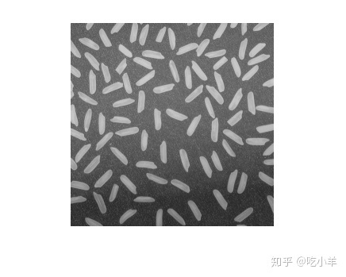
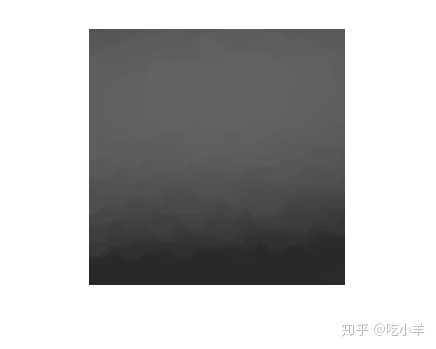
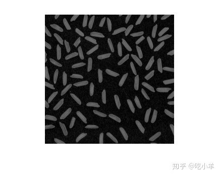
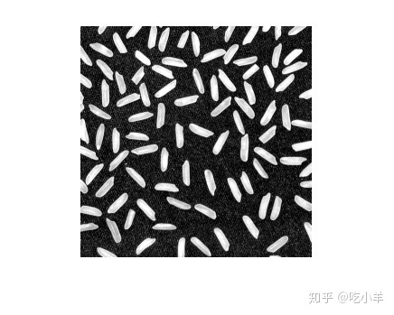
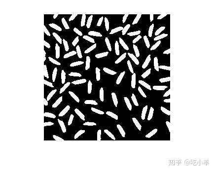
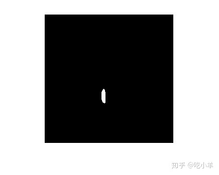
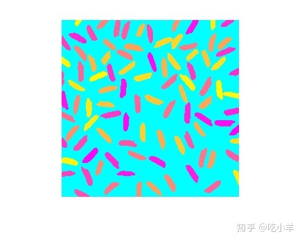
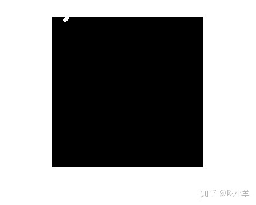
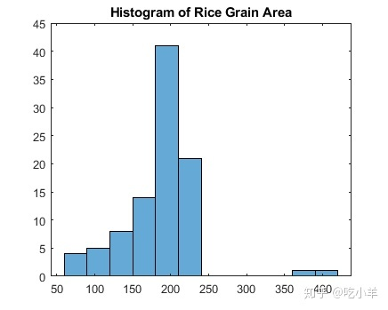
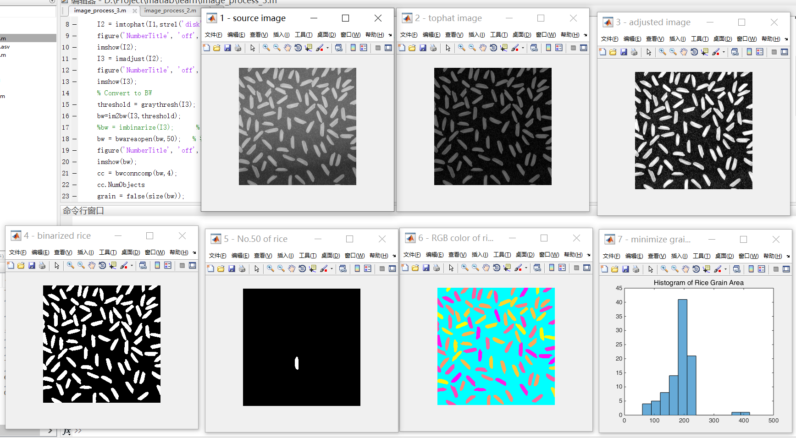

Home
此示例显示了在分析之前，作为预处理步骤，如何将图像增强。在此示例中，您纠正了不均匀的背景照明，并将图像转换为二进制图像，以便易于识别前景对象（稻米的各个谷物）。然后，您可以分析对象，例如查找每个米粒的面积，然后可以计算图像中所有对象的统计信息。
预处理图像
将图像读入工作区。
I = imread('rice.png');
imshow(I)

图像中央的背景照明比底部的背景照明更亮。预处理图像以使背景照明更均匀。
第一步，使用形态学开操作，去除所有前景（大米）。开操作会删除无法完全包含在结构元素的小物体。定义一个半径为15的盘状结构元素，该元素完全适合单个米粒。
se = strel('disk',15)
se =
strel is a disk shaped structuring element with properties:
Neighborhood: [29x29 logical]
Dimensionality: 2
要执行形态开操作，请将imopen与结构元素一起使用。
background = imopen(I,se); imshow(background)

从原始图像I中减去背景近似图像，background，然后查看结果图像。从原始图像中减去调整后的背景图像后，生成的图像具有均匀的背景，但用于分析还是显得有点暗。
I2 = I - background; imshow(I2)

用imadjust来增加处理后图像I2的对比度：将1%的低强度值和高强度值饱和调整到以填充到uint8的全部动态范围。
I3 = imadjust(I2); imshow(I3)

创建已处理图像的二进制版本，以便可以使用工具箱功能进行分析。使用imbinarize函数，将灰度图像转换为二进制图像。用bwareaopen函数消除图像中的背景噪音。
% Convert to BW threshold = graythresh(I3); bw=im2bw(I3,threshold); %bw = imbinarize(I3); % only available after 2016b bw = bwareaopen(bw,50); imshow(bw)

识别图像中的对象
现在，您已经创建了原始图像的二进制版本，可以执行图像中对象的分析。
在二进制图像中找到所有连接的组件（对象）。结果的准确性取决于对象的大小，连通性参数（4、8或任意），以及是否有任何对象邻接（在这种情况下，它们可以被标记为一个对象）。二值图像bw中的一些米粒是邻接的。
cc = bwconncomp(bw,4)
cc = struct with fields:
Connectivity: 4
ImageSize: [256 256]
NumObjects: 95
PixelIdxList: {1x95 cell}
cc.NumObjects
ans = 95
查看图像中标记为50的米粒。
grain = false(size(bw));
grain(cc.PixelIdxList{50}) = true;
imshow(grain)

通过创建标签矩阵，然后将其显示为伪彩色索引图像，可视化图像中所有连接的组件。
使用从bwconncomp的输出中创建的标签矩阵labelmatrix。请注意，labelmatrix将标签矩阵存储在对象数量所需的最小数字类中。
labeled = labelmatrix(cc); whos labeled Name Size Bytes Class Attributes labeled 256x256 65536 uint8
使用label2rgb选择颜色调色板，背景颜色，以及在调色板中如何在标签矩阵映射对象的颜色。在伪彩色图像中，标识标签矩阵中每个对象的标签映射到关联的调色板矩阵中的不同颜色。
RGB_label = label2rgb(labeled,'spring','c','shuffle'); imshow(RGB_label)

计算基于区域的统计信息
使用regionprops来计算图像中每个对象的面积。每个米粒是cc结构中一个连接的组件。
graindata = regionprops(cc,'basic')
graindata=95×1 struct array with fields:
Area
Centroid
BoundingBox
创建一个新矢量grain_areas，其中包含每个谷物的面积测量值。
grain_areas = [graindata.Area];
找到第50个组件的面积。
grain_areas(50) ans = 194
查找并显示面积最小的谷物。
[min_area, idx] = min(grain_areas)
min_area = 61
idx = 16
grain = false(size(bw));
grain(cc.PixelIdxList{idx}) = true;
imshow(grain)

使用histogram命令创建米粒面积的直方图。
histogram(grain_areas)
title('Histogram of Rice Grain Area')

我的测试结果及程序
下面是我测试的代码：
clear all;
close all;
clc;
I1 = imread('rice.png');
figure('NumberTitle', 'off', 'Name', '1 - source image');
imshow(I1); % ,title('source file');
I2 = imtophat(I1,strel('disk',15)); % strel is a disk shaped structuring element
figure('NumberTitle', 'off', 'Name', '2 - tophat image'); % source - backgroud
imshow(I2);
I3 = imadjust(I2);
figure('NumberTitle', 'off', 'Name', '3 - adjusted image');
imshow(I3);
% Convert to BW
threshold = graythresh(I3);
bw=im2bw(I3,threshold);
%bw = imbinarize(I3); % only available after 2016b
bw = bwareaopen(bw,50); % 消除图像中的背景噪音
figure('NumberTitle', 'off', 'Name', '4 - binarized rice');
imshow(bw);
cc = bwconncomp(bw,4);
cc.NumObjects
grain = false(size(bw));
grain(cc.PixelIdxList{50}) = true;
figure('NumberTitle', 'off', 'Name', '5 - No.50 of rice');
imshow(grain);
labeled = labelmatrix(cc);
RGB_label = label2rgb(labeled,'spring','c','shuffle');
figure('NumberTitle', 'off', 'Name', '6 - RGB color of rice');
imshow(RGB_label);
graindata = regionprops(cc,'basic');
grain_areas = [graindata.Area];
grain_areas(50)
[min_area, idx] = min(grain_areas)
grain = false(size(bw));
grain(cc.PixelIdxList{idx}) = true;
figure('NumberTitle', 'off', 'Name', '7 - minimize grain area');
imshow(grain);
histogram(grain_areas);
title('Histogram of Rice Grain Area')

注：本文根据MATLAB官网内容修改而成。